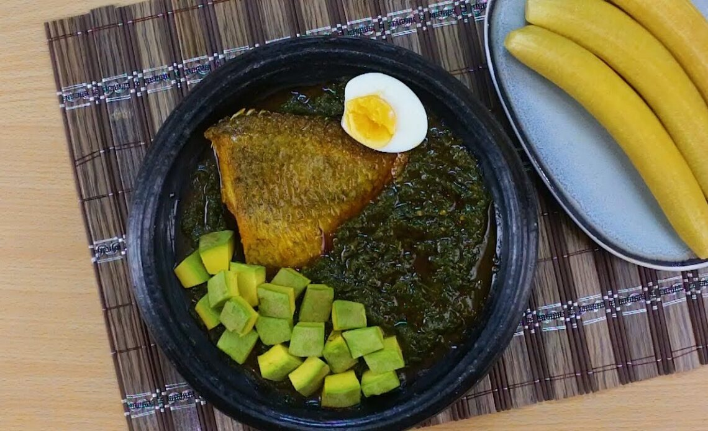

Home
Ampesi

Ingredients:
- 1/2 tuber yam
- 3 pieces unripe plantain
- Salt to taste
- 5 pieces kontomire (cocoyam) leaves
- 1 egg
- 2 fresh tomato
- 1 medium-sized onions
- 1/2 inch ginger
- 2 tablespoons smoked fish
- 1/2 cup palm oil
- Seasoning powder or cubes
- 2 teasi grounded shrimp
- Pepper
- Salted fish (Koobi)
Steps:
- Using a sharp knife, peel yam and plantain into a bowl. Pour water on it and wash them thoroughly until clean.
- In a large saucepan, pour water in it until half level. Arrange yam and plantain and place on medium high heat. Add salt to taste
- Boil AMPESI until soft and tender for 15 minutes. Remove from fire and drain water from it.
- Pour AMPESI in a bowl with lid and set aside warm.
- Wash kontomire and turkey berries thoroughly and put into a clean saucepan. Boil under medium heat until they are soft.
- Blend onions, ginger, tomatoes, pepper and turkey berries together. Pour into a bowl and set aside. Grind KONTOMIRE in earthenware bowl until soft
- Remove bones from the fish, wash it, break into pieces and set aside.
- Place a saucepan on a medium heat and add oil.
- Wash and cut salted fish into pieces and place in oil
- Pour blended mixture into the oil and stir. Cook for 5 minutes.
- Crack egg into a bowl and stir it for a while.
- Add salmon, salt and seasoning cubes. Add grounded kontomire stir then add egg on top.
- Simmer for about 10 minutes till the stew thickens.